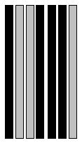

Problem D |
Bar Codes |
Time Limit |
1 Second |
A bar-code symbol consists of alternating dark and light bars, starting with a dark bar on the left. Each bar is a number of units wide. Figure 1 shows a bar-code symbol consisting of 4 bars that extend over 1+2+3+1=7 units.

Figure 1: Bar-code over 7 units with 4 bars
In general, the bar code BC(n,k,m) is the set of all symbols with k bars that together extend over exactly n units, each bar being at most m units wide. For instance, the symbol in Figure 1 belongs to BC(7,4,3) but not to BC(7,4,2). Figure 2 shows all 16 symbols in BC(7,4,3). Each `1' represents a dark unit, each `0' a light unit.
0: 1000100 | 4: 1001110 | 8: 1100100 | 12: 1101110
1: 1000110 | 5: 1011000 | 9: 1100110 | 13: 1110010
2: 1001000 | 6: 1011100 | 10: 1101000 | 14: 1110100
3: 1001100 | 7: 1100010 | 11: 1101100 | 15: 1110110
Figure 2: All symbols of BC(7,4,3)
Input
Each input will contain three positive integers n, k, and m (1 ≤ n, k, m ≤ 50).
Output
For each input print the total number of symbols in BC(n,k,m). Output will fit in 64-bit signed integer.
Sample Input |
Output for Sample Input |
7 4 3 |
16 |